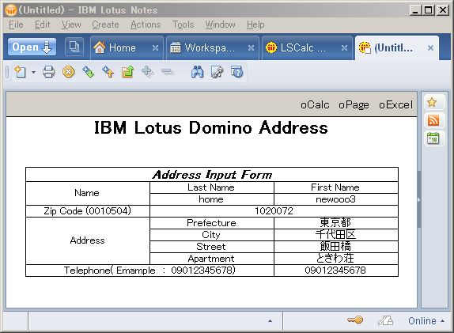
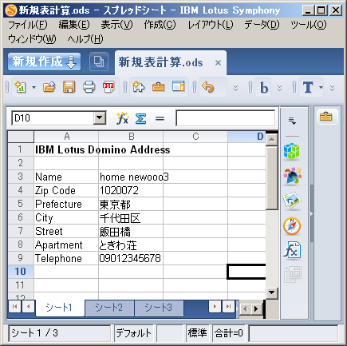

Dominoとの連携
IBM Domino/Notes上のDataをOpenOffice.orgをBaseとした統合Soft(LotusSymphony)の 表計算Soft(SpreadSheet)へ出力するLotrusScriptのCodeを紹介します。
Dominoとの連携
Sub Click(Source As Button)
On Error Goto oBad
Dim ws As New NotesUIWorkspace
Dim uidoc As NotesUIDocument
Dim oDoc As NotesDocument
'
Set uidoc = ws.currentdocument
Set oDoc = uidoc.document
'
Dim oNameSei, oNameNa As Variant
Dim oZipcode As Variant
Dim oPrfct, oCity, oStreet, oApt As Variant
Dim oTel As Variant
'
oNameSei = oDoc.GetItemValue("nameSei")
oNameNa = oDoc.GetItemValue("nameNa")
oZipcode = oDoc.GetItemValue("zipcode1")
oPrfct = oDoc.GetItemValue("todoufuken")
oCity = oDoc.GetItemValue("sichouson")
oStreet = oDoc.GetItemValue("banchi")
oApt = oDoc.GetItemValue("apart")
oTel = oDoc.GetItemValue("tel")
'
Dim oTitle(6) As String
Dim oCalcData(6) As String
oTitle(0) = Cstr("Name")
oTitle(1) = Cstr("Zip Code")
oTitle(2) = Cstr("Prefecture")
oTitle(3) = Cstr("City")
oTitle(4) = Cstr("Street")
oTitle(5) = Cstr("Apartment")
oTitle(6) = Cstr("Telephone")
'
oCalcData(0) = Cstr(oNameSei(0) & " " & oNameNa(0))
oCalcData(1) = Cstr(oZipcode(0))
oCalcData(2) = Cstr(oPrfct(0))
oCalcData(3) = Cstr(oCity(0))
oCalcData(4) = Cstr(oStreet(0))
oCalcData(5) = Cstr(oApt(0))
oCalcData(6) = Cstr(oTel(0))
Dim objServiceManager As Variant
Dim args()
Set objServiceManager = CreateObject("com.sun.star.ServiceManager")
Set objCoreReflection = objServiceManager.createInstance("com.sun.star.reflection.CoreReflection")
Set oDesktop = objservicemanager.createInstance("com.sun.star.frame.Desktop")
Set oCalcDoc = oDesktop.loadComponentFromURL("private:factory/scalc", "_blank", 0, args)
Set xWorksheet = oCalcDoc.Sheets.getByIndex(0)
'
Set xCell = xWorksheet.getCellByPosition(0, 0)
Call xCell.setString( "IBM Lotus Domino Address" )
xCell.CharWeight = 150
'
Dim nrow, m As Integer
Dim ncol As Integer
m = 2
For i = 0 To 6
nrow = m + i
ncol = 0
Set xCell = xWorksheet.getCellByPosition(ncol, nrow)
Call xCell.setString( oTitle(i) )
Next
For i = 0 To 6
nrow = m + i
ncol = 1
Set xCell = xWorksheet.getCellByPosition(ncol, nrow)
Call xCell.setString( oCalcData(i) )
Next
'
Exit Sub
oBad:
oDisp = "プロプロシージャ ： " & Chr(9) & Getthreadinfo(1) & Chr(10) & _
"Error Line ： " & Chr(9) & Erl & Chr(10) & _
"Message ： " & Chr(9) & Error
Messagebox oDisp, 16, "Error Message"
End Sub
